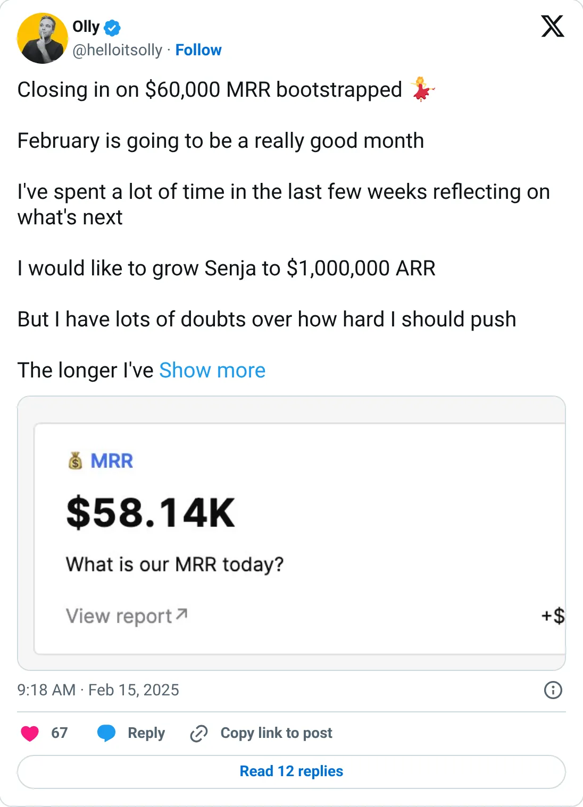
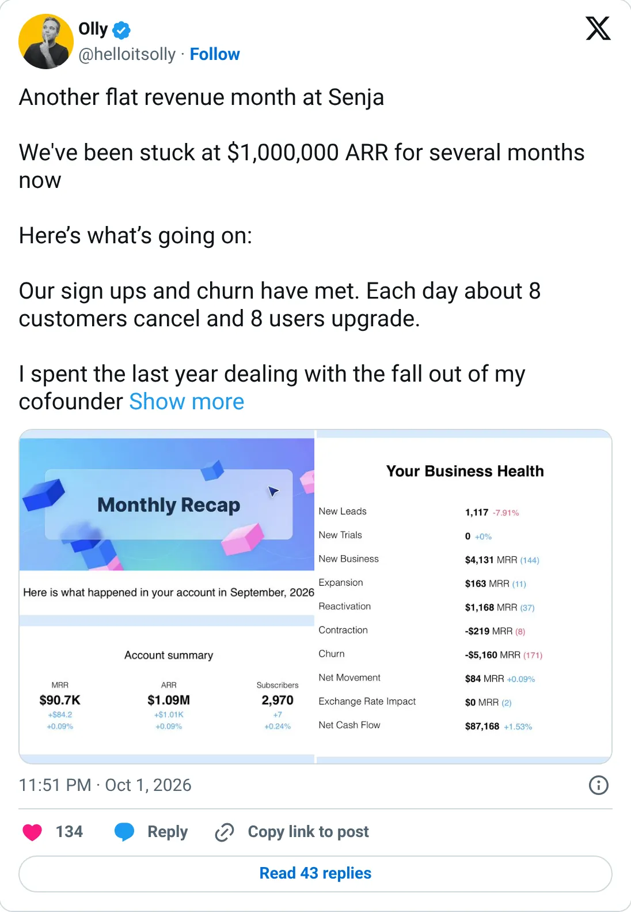

Not a pick
Senja
The ledger looks real. It is not one of the clearer things to start next.
$88,200 MRR (Feb 2026) · ~$1M ARR
Should you build this
The money looks real, and it is still not a recommendation to start a copy. Senja's February 2026 number is $88,200 MRR, after a slow public climb through $60K, $65K, and $70K. On October 1, 2026 he said it was flat, stuck around $1M ARR for months, which is about $83K a month. The two figures agree, and the newer one is the less flattering one. Self-reported, a few months stale, and behaviorally credible.
Cited from the captured posts, shown below: the earliest captured post (Feb 15, 2025) is the source for “Closing in on $60K MRR”; the latest milestone (Oct 1, 2026) is the source for “Flat, stuck at $1M ARR for months”.
Posts this is based on

Closing in on $60K MRR
Open on X

Flat, stuck at $1M ARR for months
Open on X
What the product is
Collect, manage and share customer testimonials (text and video) with embeddable walls of love and widgets.